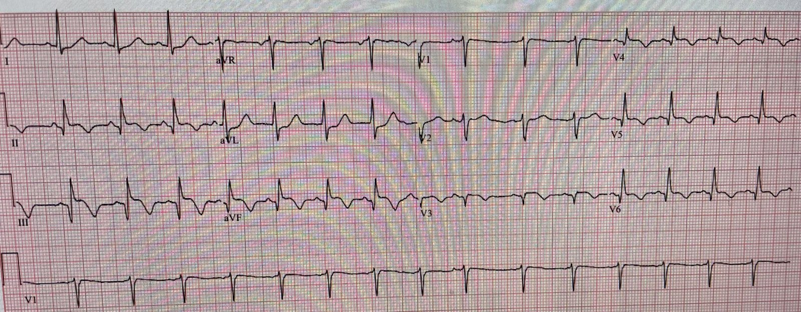
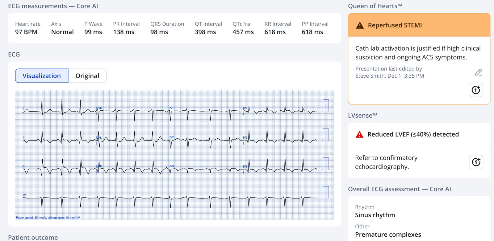
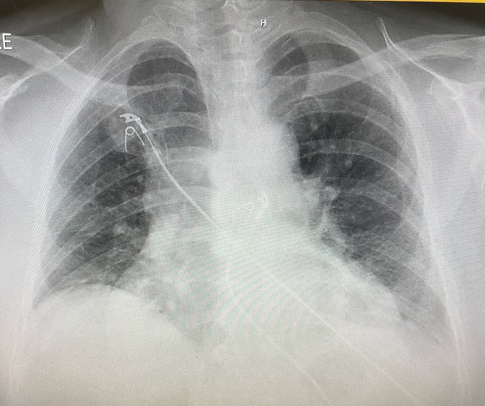
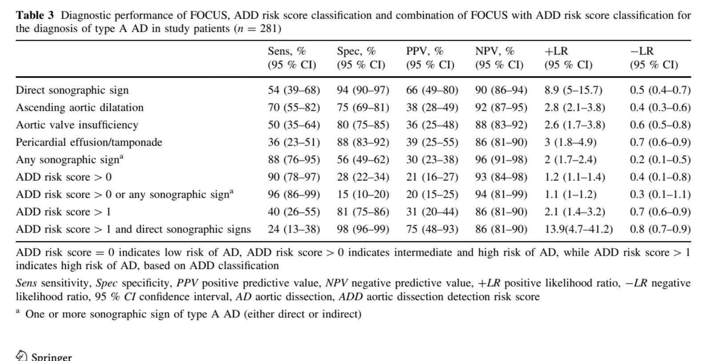
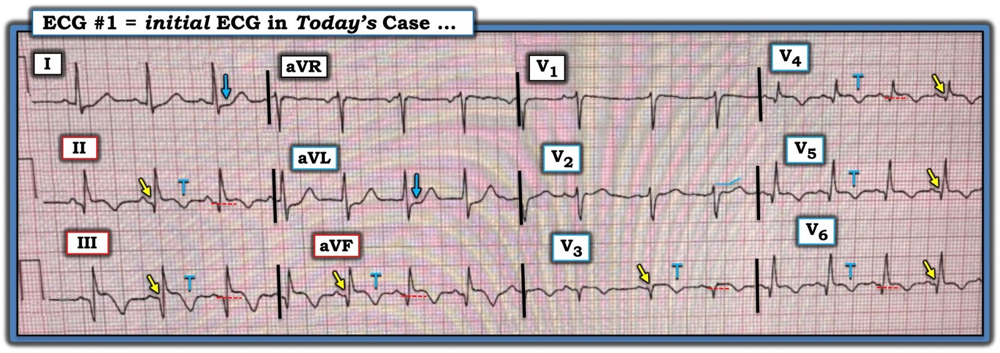

11/12/2025 — Khi nào nên chụp CT ở bệnh nhân STEMI để loại trừ bóc tách động mạch chủ?
Bản dịch tiếng Việt của bài "When should you get a CT scan on a STEMI patient to rule out aortic dissection?" – Dr. Smith’s ECG Blog. Giữ nguyên toàn bộ 6 hình ảnh của bản gốc.
Trả lời: Hầu như không bao giờ
2 ca bệnh
Ca 1: Ca này do một độc giả gửi cho tôi; đồng nghiệp của độc giả này là người xử trí ca bệnh:
Đây là một phụ nữ 55 tuổi, không hút thuốc, có tiền sử tăng huyết áp. Không có bệnh động mạch vành (CAD). Bệnh nhân đến viện vì 3 giờ khó thở dao động theo từng đợt, mỗi đợt nặng dần trong 15 phút rồi đỡ một phần, kèm buồn nôn. Không đau ngực hay đau lưng. Lưu ý: 1/3 số ca STEMI không có đau ngực.
Đây là điện tâm đồ lúc nhập viện:


Đây rõ ràng là OMI thành dưới và thành bên, dù thực ra trông như 1) bán cấp, với sóng Q đã hình thành rõ ở các chuyển đạo dưới và các chuyển đạo bên V3-V6, và 2) có lẽ đã tái tưới máu, với sóng T đảo ngược kiểu “tái tưới máu” ở các chuyển đạo dưới và V3-6. Ngay cả khi điện tâm đồ gợi ý OMI bán cấp, OMI đã tái tưới máu, hoặc cả hai, sự hiện diện của triệu chứng đang diễn ra (dù là đau ngực, khó thở hay triệu chứng khác) bắt buộc phải kích hoạt phòng thông tim (cath lab) cấp cứu.
Ngoài lề: Đây có thể là một OMI bán cấp đã tái tưới máu hoàn toàn, chưa bao giờ có đau ngực (thực sự là một nhồi máu cơ tim thầm lặng), nhưng theo thời gian, do giảm co bóp hoặc do rối loạn chức năng van, đã tiến triển thành suy tim/phù phổi như một hậu quả của nhồi máu. Nói cách khác, sự hiện diện của triệu chứng có thể là do hậu quả của nhồi máu chứ không phải do huyết khối mạch vành đang hoạt động.
Queen of Hearts đồng ý là đã tái tưới máu:


Bác sĩ (làm việc ở một bệnh viện không có PCI) đã nhận ra điện tâm đồ cho thấy OMI (“phân nhóm STEMI”). Anh gửi bản ghi cho bác sĩ tim mạch tư vấn của mình ở một trung tâm có PCI, và bác sĩ tim mạch đó đã khuyến cáo đúng đắn là dùng thuốc tiêu sợi huyết và chuyển viện càng sớm càng tốt để làm PCI.
Bệnh nhân vẫn khó thở và huyết áp tâm thu 80 mmHg, nên bắt đầu norepinephrine liều thấp. Bác sĩ quyết định cho chụp “X-quang ngực sàng lọc” trước khi dùng thuốc tiêu sợi huyết. Phim X-quang ngực tại giường này đã được chụp:


Bạn nghĩ gì?
Có bằng chứng sung huyết phổi. CÓ VẺ như trung thất rộng, nhưng phim bị XOAY! Khí quản lẽ ra phải nằm ngay giữa hai đầu xương đòn, nhưng đầu xương đòn trái bị xoay sang phải và đầu xương đòn phải lệch xa sang phải. Điều này khiến phần trước của quai động mạch chủ nằm lệch xa sang phải so với vị trí đúng và đánh lừa bạn rằng trung thất rộng. Không có trung thất giãn rộng.
Các bác sĩ điều trị cho rằng trung thất không bình thường, và vì vậy anh lo ngại rằng nhồi máu cơ tim cấp của bệnh nhân là do bóc tách động mạch chủ. Vì thế anh cho bệnh nhân đi chụp CT mạch máu ngực (CTA) trước khi dùng thuốc tiêu sợi huyết.
Đó là một lần chụp khó khăn, có thoát thuốc cản quang một phần.
Bệnh nhân ngừng tim ngay trong máy chụp CT ngay sau khi thu nhận hình ảnh. Nhịp được ghi nhận là nhịp không sốc điện được.
Điều đáng chú ý là bác sĩ đã trao đổi với khoa tim mạch trong suốt 50 phút hồi sinh tim phổi và được dặn là cho thuốc tiêu sợi huyết nếu đạt được tái lập tuần hoàn tự nhiên (ROSC), nhưng chỉ khi CTA đã loại trừ bóc tách.
–Troponin I ban đầu = 3.12 ng/mL (xác nhận OMI bán cấp)
–NT-Pro-BNP > 30,000 pg/mL (rất cao; cùng với X-quang ngực, nó xác nhận sung huyết phổi là nguyên nhân gây khó thở.
Bệnh nhân bị suy tim do OMI bán cấp.
Kết quả chụp CT mạch máu: thuốc cản quang không tối ưu, không có bóc tách, phổi dạng kính mờ, tim to, tĩnh mạch gan và tĩnh mạch chủ dưới (IVC) giãn.
Bệnh nhân không hồi sức được.
Trong bệnh án có ghi rằng “do bóc tách động mạch chủ nằm trong chẩn đoán phân biệt, không thể dùng TNK-tPA một cách an toàn.”
Vì cố loại trừ bóc tách động mạch chủ, trong khi việc này hoàn toàn không cần thiết, bệnh nhân đã tử vong trong máy chụp CT vì nhồi máu cơ tim do tắc (Occlusion MI).
Ca 2
Ca 2 đã được đăng trên blog này: A very elderly woman with sudden severe chest pain radiating to her back (Một phụ nữ rất cao tuổi đột ngột đau ngực dữ dội lan ra sau lưng)
Trong ca này, tôi nghi ngờ bóc tách rất cao vì có đau lưng và chênh lệch huyết áp giữa hai bên. Điện tâm đồ có OMI thành trước diện rộng. Bệnh nhân rất cao tuổi. Tôi nhận ra rằng NẾU OMI thành trước cấp này là do bóc tách động mạch chủ, thì không thể làm gì để cứu bà. Vì vậy tôi đơn giản là giả định đó là huyết khối mạch vành và điều trị như vậy. Siêu âm tại giường cho thấy hình ảnh giống một vạt nội mạc (flap), rồi bà đột ngột bị bóc tách vào khoang màng ngoài tim và sau đó vỡ tự do vào lồng ngực, tất cả đều được ghi lại trên siêu âm.
Bàn luận
OMI cấp do bóc tách động mạch chủ cấp là hiếm. Nghiên cứu tốt nhất là nghiên cứu này, trong đó 0.5% số ca STEMI cấp là do bóc tách động mạch chủ. Trong 1576 ca STEMI cấp, 8 ca có bóc tách động mạch chủ. 5 trên 1000 ca STEMI. Hiếm.
Zhu Q-Y, Tai S, Tang L, và cs. STEMI could be the primary presentation of acute aortic dissection. Am J Emerg Med [Internet] 2017;35(11):1713–7. Truy cập tại: http://dx.doi.org/10.1016/j.ajem.2017.05.010
Hãy nhớ rằng BẤT KỲ sự chậm trễ nào trong tái tưới máu nhồi máu cơ tim do tắc đều hy sinh cơ tim!!

Đến 4 giờ sau khởi phát đau ngực, 80% lợi ích giảm tử vong của thuốc tiêu sợi huyết đã mất!
Gersh BJ, Stone GW, White HD, Holmes DR Jr. Pharmacological facilitation of primary percutaneous coronary intervention for acute myocardial infarction: is the slope of the curve the shape of the future? JAMA [Internet] 2005;293(8):979–86. Truy cập tại: http://www.ncbi.nlm.nih.gov/entrez/query.fcgi?cmd=Retrieve&db=PubMed&dopt=Citation&list_uids=15728169
Trong ca này, vì OMI đã ở giai đoạn bán cấp, khi đó thuốc tiêu sợi huyết ít lợi ích hơn nhiều (nhưng vẫn còn một phần cho tới 12 giờ), nên sự chậm trễ có lẽ không phải là điều đã giết bệnh nhân.
Điều đã giết bệnh nhân là bị ngừng tim ở nơi cách xa khu vực hồi sức. Máy chụp CT là một nơi rất tệ để bị ngừng tim.
Điểm cần học
Nghĩ quá nhiều (Overthinking)
Người gửi ca bệnh viết rằng anh cho rằng đồng nghiệp của mình đã nghĩ quá nhiều:
“Theo kinh nghiệm của tôi khi làm giám đốc chuyên môn, tật nghĩ quá nhiều rất khó khắc phục một khi bác sĩ đã học xong. Nó thường có thể trở thành một lối tiếp cận ăn sâu, ngay cả, hay đặc biệt là, ở những bác sĩ thông minh, kỹ lưỡng và có thiện ý. Họ thường là những bác sĩ ngại rủi ro, luôn có sẵn lý lẽ cho các quyết định của mình, và họ thường phòng thủ khi mọi việc diễn ra không tốt. Tôi đã cố gắng, và phần lớn là thất bại, trong việc giúp họ vượt qua điều này. Với những bác sĩ này, nghĩ bao nhiêu cũng không bao giờ là quá nhiều, họ càng nghĩ nhiều thì càng tự thấy mình giỏi hơn, và những người còn lại chúng tôi càng tỏ ra cẩu thả trong mắt họ. Có những chuyên khoa khác phù hợp hơn với lối tiếp cận này. Trong cấp cứu, chúng ta nên giống như Goldilocks – nghĩ vừa đủ, sẵn sàng chọn nhanh chiếc giường phù hợp, và nằm lên đó.”
Một định nghĩa về nghĩ quá nhiều: một kiểu suy nghĩ tiêu cực, trong đó bạn bị mắc kẹt vào việc phân tích quá mức các suy nghĩ, tình huống hay quyết định, lặp đi lặp lại chúng mà không tìm ra lời giải. Điều này có thể bao gồm việc day dứt về những sai lầm trong quá khứ và lo lắng về các kịch bản xấu nhất.
Tóm tắt của tôi về nghĩ quá nhiều: “Chỉ vì bạn có thể nghĩ ra những nguyên nhân khác gây nên tình trạng nguy kịch của bệnh nhân không có nghĩa là những nguyên nhân đó có khả năng xảy ra dù chỉ một chút.”
Về STEMI/OMI do bóc tách động mạch chủ: Nếu bạn có bất kỳ lo ngại nào về bóc tách động mạch chủ, hãy làm siêu âm tại giường và CHỈ chụp CT nếu:
1) bệnh cảnh lâm sàng gợi ý bóc tách động mạch chủ và siêu âm ủng hộ bóc tách động mạch chủ (AD), hoặc
2) siêu âm cho chẩn đoán xác định AD
Sàng lọc bóc tách động mạch chủ bằng siêu âm tim tại giường có độ nhạy và độ đặc hiệu khá cao. Nếu siêu âm tại giường không có dấu hiệu AD, thì việc một bệnh nhân STEMI (OMI) phải chụp CT trước điều trị tái tưới máu phải là cực kỳ hiếm.
Các độ nhạy và độ đặc hiệu cao này được ghi nhận ở những bệnh nhân chưa có sẵn chẩn đoán OMI cấp. Ở những bệnh nhân mà bạn đã có chẩn đoán OMI giải thích cho triệu chứng, giá trị chẩn đoán của một xét nghiệm âm tính là loại trừ chẩn đoán AD. Xem phân tích Bayes bên dưới.
Bảng các dấu hiệu siêu âm của AD theo Nazerian và cs.:


Đây là Hướng dẫn tiếp cận Bayes đối với bóc tách động mạch chủ, của người bạn của tôi Jose Nunes de Alencar.
Hãy xem xét các ca này bằng tỷ số khả dĩ (Likelihood Ratio).
1. Sức mạnh “loại trừ” (Rule Out)
Đây chính là giá trị thực sự của siêu âm tại giường trong tình huống này.
- Xác suất tiền nghiệm: 0.5% (Odds tiền nghiệm xấp xỉ 0.005).
- Xét nghiệm: Không có bất kỳ dấu hiệu siêu âm nào.
- Tỷ số khả dĩ âm (-LR): 0.2.
- Tính toán: 0.005 x 0.2 = 0.001 (Odds hậu nghiệm).
- Kết quả: Nguy cơ giảm từ 0.5% (1 trên 200) xuống 0.1% (1 trên 1000). Nguy cơ lúc này là không đáng kể, về thực chất là loại trừ bóc tách cho mục đích xử trí cấp cứu. Nó bật đèn xanh cho bạn bỏ qua CT và cứu lấy cơ tim.
2. Sức mạnh “khẳng định” (Rule In)
- Xét nghiệm: Có dấu hiệu siêu âm trực tiếp (vạt nội mạc).
- Tỷ số khả dĩ dương (+LR): ~9.0.
- Tính toán: 0.005 x 9.0 = 0.045.
- Kết quả: Nguy cơ tăng từ 0.5% lên 4.5%. Dù xác suất hậu nghiệm 4.5% có vẻ “thấp”, hãy nhìn vào mức tăng tương đối: nguy cơ đã tăng gần 10 lần. Vì vậy, ngay cả khi xác suất hậu nghiệm tuyệt đối thấp, xác suất này đủ cao để tạm dừng và ít nhất cân nhắc chụp CT.
3. Tình huống “hiệp đồng” (Nghi ngờ lâm sàng + Siêu âm tim dương tính)
Đây là lúc khái niệm “bệnh nhân là một cá thể” làm thay đổi mọi thứ. Nếu bệnh nhân đến với các triệu chứng đặc hiệu (ví dụ: đau như xé, mất mạch), họ không còn thuộc nhóm nền 0.5% nữa.
- Xác suất tiền nghiệm: Hãy ước tính một cách thận trọng là 20% (Odds tiền nghiệm 0.25).
- Xét nghiệm: Điểm nguy cơ ADD > 1 VÀ có dấu hiệu siêu âm trực tiếp.
- Tỷ số khả dĩ dương (+LR): 13.9.
- Tính toán: 0.25 x 13.9 = 3.47 (Odds hậu nghiệm).
- Kết quả: Xác suất tăng từ 20% lên ~78%.
Trong phân nhóm đặc thù này, siêu âm không chỉ là nút “tạm dừng”; nó thực sự trở thành công cụ chẩn đoán. Xác suất hậu nghiệm cao đến mức chúng ta chuyển hẳn hướng từ “nghi ngờ OMI” sang “xử trí bóc tách động mạch chủ” (gọi phẫu thuật viên, kiểm soát huyết áp, và chụp CT để xác nhận và lập kế hoạch phẫu thuật sửa chữa, chứ không chỉ để loại trừ).
Tài liệu tham khảo
- Nazerian, Peiman, và cs. “Diagnostic performance of emergency transthoracic focus cardiac ultrasound in suspected acute type A aortic dissection.” Internal and emergency medicine 9.6 (2014): 665-670.
- Nghiên cứu này được thực hiện trên một nhóm 281 bệnh nhân nghi ngờ AD (không phải tất cả là bệnh nhân đau ngực và không phải tất cả là bệnh nhân STEMI), trong đó 50 người (18%) có AD.
- Phát hiện bất kỳ dấu hiệu FOCUS nào (trực tiếp hoặc gián tiếp) của AD có độ nhạy 88% (KTC 95% 76–95 %) cho chẩn đoán AD type A. Có điểm nguy cơ ADD >0 hoặc phát hiện bất kỳ dấu hiệu FOCUS nào làm tăng độ nhạy chẩn đoán lên 96% (KTC 95 % 86–99 %). Phát hiện dấu hiệu FOCUS trực tiếp có độ đặc hiệu 94% (KTC 95% 90–97 %), trong khi kết hợp điểm nguy cơ ADD [1 với phát hiện dấu hiệu FOCUS trực tiếp có độ đặc hiệu 98 % (KTC 95 % 96–99 %).
- Pare, Joseph R., và cs. “Emergency physician focused cardiac ultrasound improves diagnosis of ascending aortic dissection.” The American Journal of Emergency Medicine 34.3 (2016): 486-492.
- Kết quả: Trong 386547 lượt khám tại khoa cấp cứu, rà soát có chủ đích 123 hồ sơ bệnh án và 194 biên bản tử thiết đã xác định được 32 bệnh nhân đưa vào nghiên cứu. Mười sáu bệnh nhân được bác sĩ cấp cứu làm FOCUS (EP FOCUS) và 16 bệnh nhân không được làm. Thời gian trung vị đến chẩn đoán ở nhóm EP FOCUS là 80 (khoảng tứ phân vị [IQR], 46-157) phút so với 226 (IQR, 109-1449) phút ở nhóm không EP FOCUS (P=0.023). Tỷ lệ chẩn đoán sai là 0% (0/16) ở nhóm EP FOCUS so với 43.8% (7/16) ở nhóm không EP FOCUS (P=0.028). Tử vong, sau hiệu chỉnh theo tình trạng không hồi sức (do-not-resuscitate), ở nhóm EP FOCUS so với nhóm không EP FOCUS là 15.4% so với 37.5% (P=0.24). Thời gian trung vị từ lúc vào phòng khám đến khi ra quyết định xử trí là 134 (IQR, 101-195) phút với EP FOCUS so với 205 (IQR,
114-342) phút với nhóm không EP FOCUS (P= 0.27). Kết luận:
Bệnh nhân được bác sĩ cấp cứu làm FOCUS được chẩn đoán nhanh hơn và ít bị chẩn đoán sai hơn so với bệnh nhân
không được làm EP FOCUS
- Kết quả: Trong 386547 lượt khám tại khoa cấp cứu, rà soát có chủ đích 123 hồ sơ bệnh án và 194 biên bản tử thiết đã xác định được 32 bệnh nhân đưa vào nghiên cứu. Mười sáu bệnh nhân được bác sĩ cấp cứu làm FOCUS (EP FOCUS) và 16 bệnh nhân không được làm. Thời gian trung vị đến chẩn đoán ở nhóm EP FOCUS là 80 (khoảng tứ phân vị [IQR], 46-157) phút so với 226 (IQR, 109-1449) phút ở nhóm không EP FOCUS (P=0.023). Tỷ lệ chẩn đoán sai là 0% (0/16) ở nhóm EP FOCUS so với 43.8% (7/16) ở nhóm không EP FOCUS (P=0.028). Tử vong, sau hiệu chỉnh theo tình trạng không hồi sức (do-not-resuscitate), ở nhóm EP FOCUS so với nhóm không EP FOCUS là 15.4% so với 37.5% (P=0.24). Thời gian trung vị từ lúc vào phòng khám đến khi ra quyết định xử trí là 134 (IQR, 101-195) phút với EP FOCUS so với 205 (IQR,
= = =
======================================
BÌNH LUẬN CỦA TÔI, bởi KEN GRAUER, MD (11/12/2025):
Bài bàn luận hôm nay của Dr. Smith giới thiệu 2 ca khó mà việc xử trí tối ưu đòi hỏi nhiều hơn là chỉ đọc điện tâm đồ. Đặc biệt, bài nêu bật nhu cầu phải cân nhắc ưu và nhược điểm của các chiến lược xử trí khác nhau — với khả năng lâm sàng của nguy cơ tiềm tàng so với lợi ích tiềm tàng của các can thiệp. Các ĐIỂM THEN CHỐT (PEARL) mà Dr. Smith đưa ra trong phần bàn luận ở trên đáng được nhắc lại:
- X-quang ngực tại giường ở bệnh nhân “nặng” thường có chất lượng không tối ưu. Bỏ qua thực tế lâm sàng này ở phim X-quang ngực tư thế AP bị xoay và hít vào chưa đủ ở trên — đã khiến những người điều trị trong Ca #1 kết luận sai rằng có trung thất giãn rộng. (Nó cũng có thể gây hiểu lầm về việc có hay không có suy tim/phù phổi).
- OMI cấp do bóc tách động mạch chủ cấp là hiếm ( = tỷ lệ hiếm gặp 0.5% bóc tách động mạch chủ cấp trong một nhóm nghiên cứu gồm 1,500+ bệnh nhân STEMI cấp, ở những người này STEMI là do bóc tách động mạch chủ cấp — trích dẫn Zhu và cs. mà Dr. Smith đã nêu ở trên).
- Quyết định đi tìm 0.5% bệnh nhân STEMI có STEMI do bóc tách động mạch chủ cấp không vô hại — vì thực tế lâm sàng là làm như vậy sẽ làm chậm đáng kể việc dùng thuốc tiêu sợi huyết/PCI ở 99.5% bệnh nhân STEMI không có bóc tách động mạch chủ (như Hình của Dr. Smith cho thấy 80% lợi ích giảm tử vong của thuốc tiêu sợi huyết bị mất sau 4 giờ kể từ khởi phát đau ngực).
- Dành một chút thời gian để kiểm tra sự cân xứng huyết áp ở cả hai chi (như Dr. Smith đã làm trong Ca #2) — nhanh hơn rất nhiều so với phải chụp CTA ngực.
- Nếu thực sự lo ngại khả năng bóc tách động mạch chủ — Hãy dùng siêu âm tim tại giường để sàng lọc! ( = Làm siêu âm tại giường nhanh hơn rất nhiều so với chụp CTA ngực).
= = =
Liên quan đến các ĐIỂM THEN CHỐT ở trên là các chi tiết trên điện tâm đồ ban đầu của Ca #1:
- Nhịp là nhịp nhanh xoang (tần số = 100/phút), với một PAC thấy ở các chuyển đạo ghi đồng thời V1,2,3. Phần lớn nhồi máu cơ tim cấp không đi kèm nhịp nhanh trừ khi có “điều gì khác” đang diễn ra (tức là suy tim, sốc tim sắp xảy ra hoặc một vấn đề nội khoa cấp tính khác).
- Có bằng chứng của một STEMI diện rộng trên Hình 1 (tức là các mũi tên VÀNG làm nổi bật sóng Q ở các chuyển đạo II,III,aVF; và ở V4,V5,V6 — với mất sóng r từ V2 sang V3 dẫn tới phức bộ QS ở chuyển đạo V3).
- Ngoài ra — vẫn còn ST chênh lên ở 6 chuyển đạo (các đường chấm ĐỎ) — đi kèm sóng T đảo ngược sâu ở 7 chuyển đạo (các chữ “T” màu XANH) — theo Dr. Smith, những thay đổi này cùng với phần cuối sóng T dương ở các chuyển đạo I,aVL — gợi ý tái tưới máu đang diễn ra.
- ST dẹt ở chuyển đạo V2 khi không có ít nhất ST chênh lên dốc lên nhẹ ở chuyển đạo này (đặc biệt khi chuyển đạo kế cận V3 cho thấy ST chênh lên dạng vòm! ) — gợi ý OMI thành sau.
- Tóm lại — tôi diễn giải điện tâm đồ #1 là chỉ điểm một STEMI dưới-sau-bên diện rộng — nhiều khả năng nhất là bán cấp (theo Dr. Smith) dựa trên các dấu hiệu điện tâm đồ của tái tưới máu đang diễn ra đã nêu ở trên. Tôi nghĩ rằng tắc cấp (hoặc mới đây) một động mạch mũ trái (LCx) ưu thế có thể giải thích hình ảnh điện tâm đồ này.
- Mặt khác, do không thể xác định từ một bản ghi duy nhất đâu là “mới” so với “gần đây” chồng lên trên nền “cũ” — tôi nghĩ nhiều khả năng bệnh nhân này có bệnh nhiều nhánh mạch vành nền đáng kể với kiểu tuần hoàn bàng hệ khó đoán trước, dẫn tới tổn thương thành trước ( = phức bộ QS với ST chênh lên dạng vòm ở chuyển đạo V3 — cùng sóng Q và ST chênh lên ở các chuyển đạo trước tim còn lại).
- Dù thế nào đi nữa — Bệnh nhân ở Ca #1 rõ ràng đã bị một nhồi máu cơ tim mới đây diện rộng — nay có các dấu hiệu điện tâm đồ rõ ràng của tái tưới máu đang diễn ra cộng với nhịp nhanh gợi ý khả năng có suy tim kèm theo, nếu không nói là sốc sắp xảy ra. Đối chiếu các dấu hiệu điện tâm đồ này với trình tự thời gian của bệnh cảnh — tôi ngờ rằng NẾU nhồi máu diện rộng của bệnh nhân này là do bóc tách động mạch chủ cấp — thì ngừng tim tử vong đã xảy ra từ lâu trước thời điểm này (do đó càng làm giảm khả năng vốn đã thấp rằng STEMI diện rộng ở Ca #1 là hậu quả của bóc tách động mạch chủ cấp).
= = =
Hình 1: Tôi đã tái hiện và đánh dấu điện tâm đồ ban đầu của Ca #1.


= = =
= = =